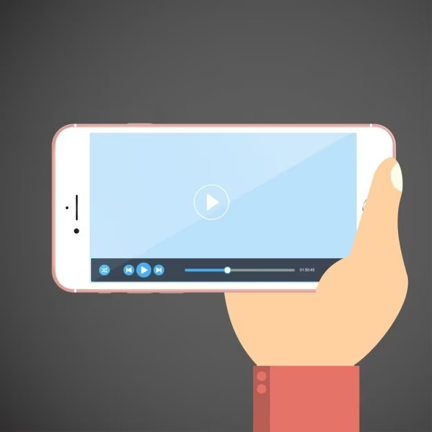
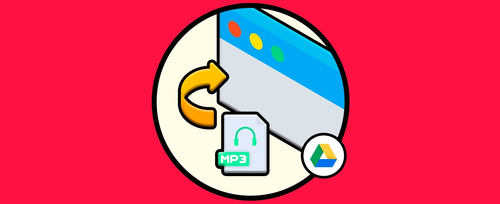

La convergencia digital es el resultado de la proliferación tecnológica que permite la readecuación de las tradicionales tecnologías analógicas y medios como la televisión, la radio y el periódico; y la inserción de nuevas formas y expresiones comunicativas tales como los medios sociales y/o conectivos. El término convergencia digital se refiere a la posibilidad de tener acceso a un mismo contenido en diferentes dispositivos gracias a la conectividad. Este contenido, el cual puede ser en video, imágenes, audio o texto; cada vez está en más dispositivos como un smartphone, TV, o computador.
Desde mediados de la década de los noventa, la digitalización ha facilitado la denominada convergencia tecnológica, entendida como la capacidad de las infraestructuras para adquirir, procesar, transportar y presentar simultáneamente voz, datos y video sobre una misma red y un terminal integrado (Prado y Franquet, 1998). Los servicios de telefonía, televisión e informática se distribuyen a través de las redes digitales, y surgen aplicaciones y servicios que confluyen en los sectores de la informática, las telecomunicaciones y el audiovisual. El proceso de convergencia tecnológica trae consigo la interrelación de los diferentes soportes, lenguajes, mensajes, códigos, modos de distribución y consumo de medios. Se puede hablar, por consiguiente, de convergencia de redes, convergencia de servicios y convergencia de aplicaciones y de contenidos.
TV - Celulares - Pcs
Ethernet - "General"
Comunicación inmediata con todo el mundo. Mediante dispositivos móviles usando internet, redes sociales y correo.
Facilita tareas cotidianas (laboral y académicamente) haciendo uso de la tecnología y la información.
Búsqueda de información gratuita ampliar conocimientos.
Teletrabajo y educación virtual.
Avances tecnológicos en el campo médico, de construcción, nanotecnología, armas, carrera espacial
Fraudes tecnológicos y ataques informáticos.
Enfermedades por usos extensos del computador.
Filtraciones de información entre países.
Adicciones a juegos; realidad virtual, aplicaciones y redes sociales.
La privacidad en juego la información es una mercancía.